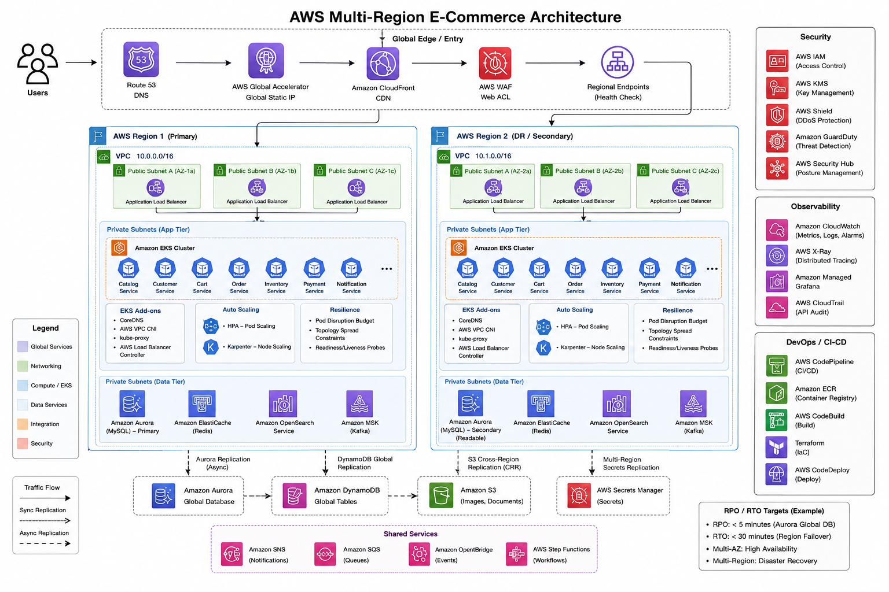

Enterprise Architecture Diagram

The diagram intentionally separates global traffic, security, regional application platforms, data, events, observability and delivery.
1. Core Design Principles
Availability
Multi-AZ protects from AZ failure. Multi-Region protects from Regional failure.
Scalability
Scale Pods and compute independently. Decouple workloads with asynchronous events.
Consistency
Use strong transactional patterns where required and distributed data models where the business permits them.
Recoverability
Define RPO/RTO first, then design replication, failover and runbooks around those targets.
2. Global Traffic Management
- Route 53: DNS, health checks and routing policies.
- Global Accelerator: useful when the application benefits from static anycast IPs and network-level global traffic steering.
- CloudFront: caches static/product content and reduces origin load.
- WAF: blocks malicious HTTP requests using managed and custom rules.
- Shield: DDoS protection for the appropriate edge resources.
3. Regional Network Architecture
- One VPC per Region with multiple Availability Zones.
- Public subnets contain ALB and required edge-facing components.
- Private application subnets contain EKS nodes/workloads.
- Private database subnets contain Aurora and other data services where applicable.
- NAT gateways provide controlled outbound internet access when required.
- VPC endpoints can reduce dependency on NAT for AWS services such as S3, ECR and Secrets Manager.
- Security groups provide workload-level network controls.
4. EKS Enterprise Platform
Traffic
ALB → AWS Load Balancer Controller → Kubernetes Ingress/Service → Pods.
Pod Scaling
HPA scales Pods from CPU, memory or custom application metrics.
Node Scaling
Karpenter provisions appropriate compute capacity as Pod scheduling demand changes.
Resilience
Readiness probes, PDBs and topology spread constraints protect availability during failures and maintenance.
Important EKS components
- CoreDNS for cluster DNS.
- VPC CNI for AWS VPC networking.
- CSI drivers for storage integration.
- AWS Load Balancer Controller for ALB/NLB integration.
- RBAC for Kubernetes authorization.
- Pod Identity / IRSA patterns for AWS API access from workloads.
5. Microservice Boundaries
| Service | Typical responsibility | Important concern |
|---|---|---|
| Catalog | Product information and availability metadata | Heavy reads, caching, search |
| Customer | Profile and customer preferences | PII protection and authorization |
| Cart | Active shopping cart | Low latency and session continuity |
| Order | Order lifecycle | Transactional consistency and idempotency |
| Inventory | Stock reservation and updates | Avoid overselling |
| Payment | Payment orchestration | Idempotency, security and auditability |
| Notification | Email/SMS/push events | Asynchronous processing and retries |
6. Database Strategy
- Aurora Global Database: strong fit for relational transactional workloads when the application's write/consistency model fits a primary-writer architecture.
- DynamoDB Global Tables: useful for globally distributed workloads that need multi-Region reads/writes, but explicitly evaluate conflict and consistency behavior.
- OpenSearch: useful for product search and discovery rather than as the system of record for orders.
- Redis: use as a cache, not automatically as the durable source of truth.
7. Caching
- Cache hot product/catalog data.
- Use TTLs and explicit invalidation for correctness-sensitive data.
- Protect Redis from becoming a single point of failure.
- Use cache-aside patterns where appropriate.
- During cache failure, the application should degrade to the durable data store with controlled load protection.
8. S3 and Object Storage
- Product images, documents, exports and static artifacts.
- Versioning for important objects.
- Encryption using KMS where required.
- Cross-Region Replication for recovery requirements.
- CloudFront for global delivery.
9. Kafka / Event-Driven Architecture
Order Service → OrderCreated → Kafka/MSK → Inventory Consumer
Order Service → OrderCreated → Kafka/MSK → Notification Consumer
- Kafka reduces synchronous coupling between services.
- Consumer groups allow independent scaling.
- Use idempotent consumers because events can be retried or redelivered.
- Use schema governance so event contracts remain compatible.
- For AWS-native simpler messaging, SQS/SNS/EventBridge may complement Kafka.
10. Security Architecture
- WAF and edge protection at the public boundary.
- IAM with least privilege.
- KMS for encryption.
- Secrets Manager for credentials and secrets.
- Private EKS/database subnets.
- Security groups and network policies for segmentation.
- CloudTrail for API audit trails.
- GuardDuty/Security Hub for security detection and centralized findings.
- JWT/OIDC authentication and service-level authorization where appropriate.
11. Observability
| Signal | Examples | What I would monitor |
|---|---|---|
| Logs | CloudWatch / centralized log platform | Error rate, exceptions, business failures |
| Metrics | Prometheus / AMP / CloudWatch | Latency, CPU, memory, saturation, request rate |
| Dashboards | Grafana | SLOs, service health, infrastructure health |
| Traces | OpenTelemetry / X-Ray | Cross-service latency and bottlenecks |
| Business | Custom KPIs | Checkout success, payment failures, order rate |
12. CI/CD and Platform Delivery
- Terraform provisions both Regions consistently.
- Container images are immutable and available to the recovery Region.
- Use automated tests and security checks before deployment.
- Use progressive delivery for high-risk services.
- Monitor deployment health before moving to the next stage.
13. Scaling and Peak Traffic
- CloudFront reduces origin traffic.
- ALB distributes requests across healthy Pods.
- HPA increases Pod replicas.
- Karpenter adds compute capacity.
- Redis reduces database pressure.
- Kafka absorbs asynchronous workload spikes.
- Database read scaling and caching reduce transactional database pressure.
- Load testing should validate the scaling assumptions before major events.
14. Disaster Recovery Strategy
First define
- RPO — maximum acceptable data loss.
- RTO — maximum acceptable recovery time.
- Critical business flows — checkout, payment, inventory and order confirmation.
Then implement
- IaC in both Regions.
- Container images available in both Regions.
- Database replication appropriate to workload.
- Secrets/configuration recovery strategy.
- Global health checks and traffic failover.
- Runbook for database promotion and application validation.
15. Regional Failure — Step by Step
2. Global traffic layer stops sending new traffic to Region A.
3. Region B receives traffic.
4. Scale Region B to required DR capacity.
5. Promote transactional database if required by the selected database architecture.
6. Validate authentication, cart, checkout, payment and inventory.
7. Monitor error rate, latency and business KPIs.
8. Reconcile asynchronous events and failed transactions.
9. Recover Region A.
10. Perform controlled failback after validation.
16. DR and Failure Testing
- AZ failure simulation.
- Pod/node failure.
- Database failover.
- Kafka broker/consumer failure.
- Cache failure.
- Regional traffic failover.
- Dependency outage and graceful degradation.
- Full Regional recovery and failback.
17. Interview Follow-Up Questions
- Why Global Accelerator instead of Route 53?
Compare DNS-level routing with static anycast IPs, network path optimization and failover requirements. - How do you prevent duplicate payments?
Use idempotency keys, durable transaction state and carefully designed retry semantics. - What happens if Kafka is unavailable?
Define producer durability, retry/backpressure and degraded synchronous behavior for critical flows. - What happens to carts during Regional failure?
Use a globally available cart data model or explicitly define acceptable cart loss based on business RPO. - How do you handle Black Friday?
Pre-scale, autoscale, cache, decouple with Kafka, protect dependencies and load test. - How do you secure EKS?
Private nodes, RBAC, workload identity, network policies, secrets, encryption, image scanning and audit logs. - How do you prove DR? Run controlled game days and measure actual failover time and data loss against RTO/RPO.
18. Interview Memory Sheet
GLOBAL: Route 53 + Global Accelerator + CloudFront + WAF
REGIONAL: VPC + Multi-AZ + ALB + private EKS
SCALE: HPA + Karpenter + topology spread + PDB
DATA: Aurora Global + DynamoDB Global + Redis + S3
EVENTS: MSK/Kafka + idempotent consumers + retries
SECURITY: IAM + KMS + Secrets Manager + WAF + private networking
OBSERVABILITY: Logs + Metrics + Traces + SLOs + Business KPIs
DR: RPO/RTO + replication + failover + validation + testing
30-second architect answer
"I would design the platform as a Multi-Region and Multi-AZ EKS architecture. Global traffic would be managed through health-aware routing, CloudFront and WAF. Each Region would have a VPC across multiple AZs, with ALB in front of private EKS workloads. HPA and Karpenter would provide application and infrastructure scaling. I would use workload-specific data stores—Aurora Global for transactional data, DynamoDB Global Tables where distributed writes fit, Redis for caching and S3 for objects. Kafka would decouple order, payment, inventory and notification workflows. Finally, I would define RPO and RTO with the business and prove the DR design through Regional failover and regular game-day testing."